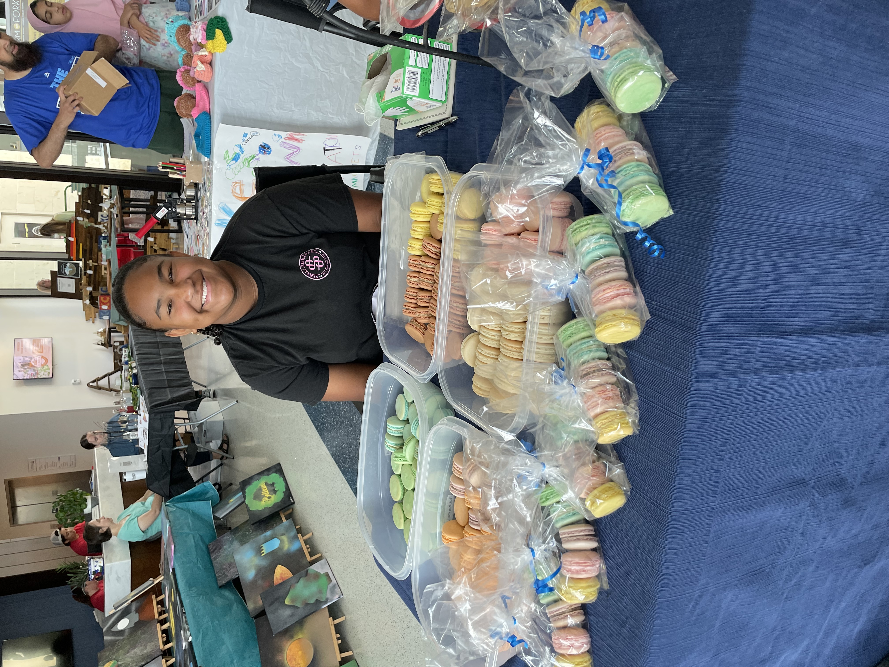
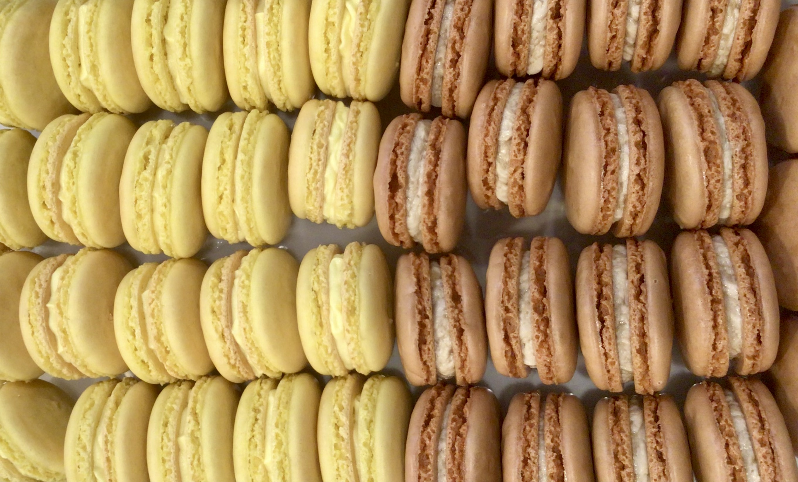
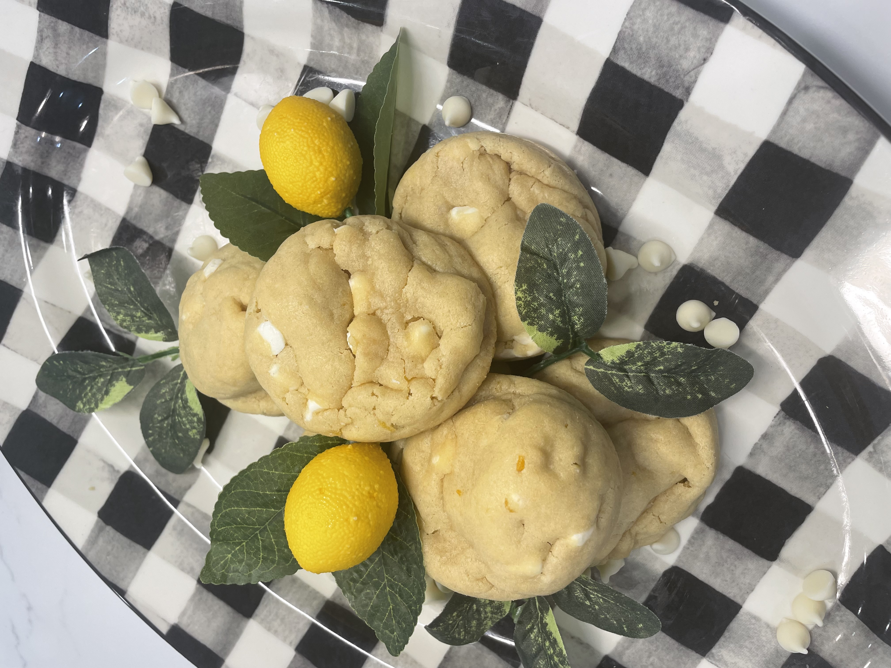
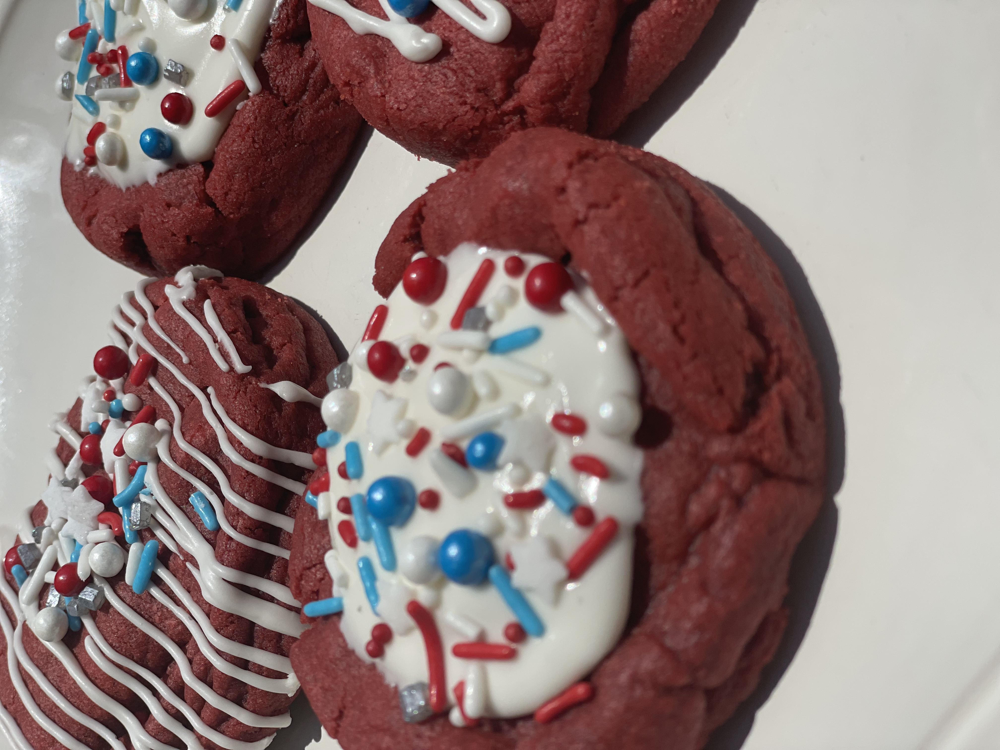

How I started baking

I started baking when I was 12. One night I told my Mom I wanted to make Macarons, and she said she did not know how to do that. So I watched some YouTube videos on how to make them,
and then I did! They turned out perfect! And the last few years I've started selling my baked goods at Kids Makers Markets and Farmers Markets.
Macarons

Lemon and chocalate are two of my favorite flavors. I have been making these for about a year now. And love selling them at Makers Markets.
Lemon Cookies

My classic Lemon Cookie has white chacolate chips in them. And little hints of lemon zest. The perfect summer cookie. My family is starting a Bakery and I will be selling these cookies
Red Velvet Cookies

Red Velvet is a new flavor that I have been working on for the fourth of July. They have white chocalote chips inside and a nice vanilla glaze with festive sprinkles.
Top 5 Things I Like To Bake
- Cookies
- Cakes
- Cinnamon Rolls
- Pies
- Bread